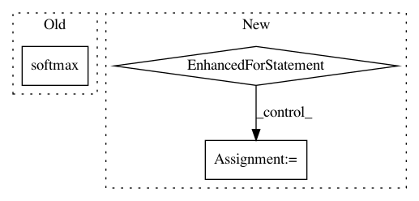

9f0b230e1f59cb399e36210483bc075760b02eaf,gluonvision/model_zoo/ssd/ssd.py,SSD,hybrid_forward,#SSD#Any#Any#,154
Before Change
if autograd.is_recording():
return [cls_preds, box_preds, anchors]
bboxes = self.bbox_decoder(box_preds, anchors)
cls_ids, scores = self.cls_decoder(F.softmax(cls_preds))
result = F.concat(
cls_ids.expand_dims(axis=-1), scores.expand_dims(axis=-1), bboxes, dim=-1)
conf_mask = F.tile(scores.expand_dims(axis=-1) > 0.01, reps=(1, 1, 6))
After Change
bboxes = self.bbox_decoder(box_preds, anchors)
cls_ids, scores = self.cls_decoder(F.softmax(cls_preds, axis=-1))
results = []
for i in range(self.num_classes - 1):
cls_id = cls_ids.slice_axis(axis=-1, begin=i, end=i+1)
score = scores.slice_axis(axis=-1, begin=i, end=i+1)
// per class results
per_result = F.concat(*[cls_id, score, bboxes], dim=-1)
if self.nms_thresh > 0 and self.nms_thresh < 1:
per_result = F.contrib.box_nms(
per_result, overlap_thresh=self.nms_thresh, topk=self.nms_topk,
id_index=0, score_index=1, coord_start=2)
results.append(per_result)
result = F.concat(*results, dim=1)
//
// cls_ids, scores = self.cls_decoder(F.softmax(cls_preds))
// result = F.concat(
In pattern: SUPERPATTERN
Frequency: 3
Non-data size: 3
Instances
Project Name: dmlc/gluon-cv
Commit Name: 9f0b230e1f59cb399e36210483bc075760b02eaf
Time: 2018-04-11
Author: cheungchih@gmail.com
File Name: gluonvision/model_zoo/ssd/ssd.py
Class Name: SSD
Method Name: hybrid_forward
Project Name: scikit-learn-contrib/DESlib
Commit Name: 7704337b2f1ef68952848b1e622e62497e0fe0b8
Time: 2017-12-27
Author: rafaelmenelau@gmail.com
File Name: pythonds/base.py
Class Name: DS
Method Name: predict_proba_ensemble
Project Name: deepchem/deepchem
Commit Name: de7f5863338af5e1f92257cb29a6ca9a1c52c473
Time: 2019-07-10
Author: peastman@stanford.edu
File Name: examples/low_data/toxcast_maml.py
Class Name:
Method Name: compute_scores